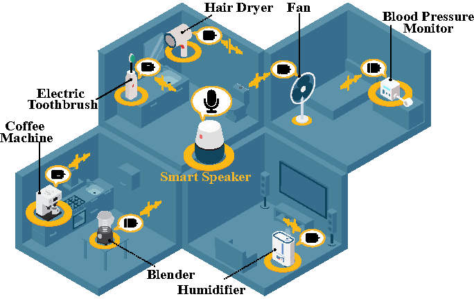
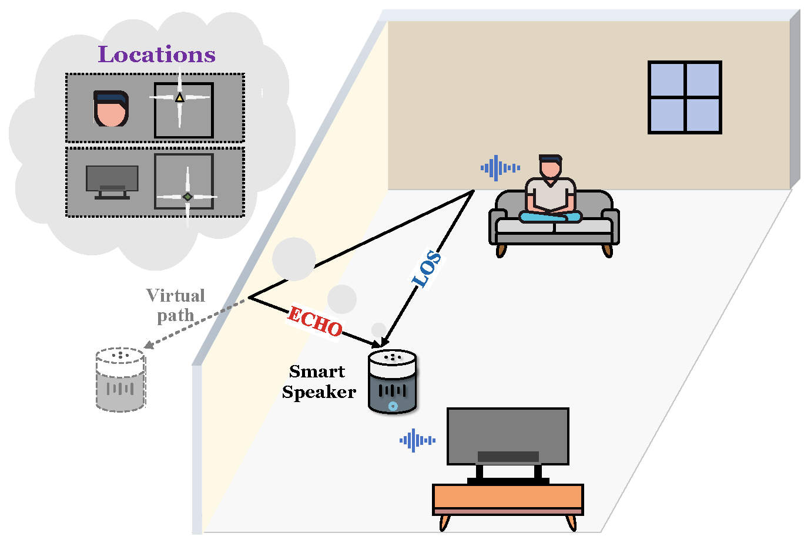
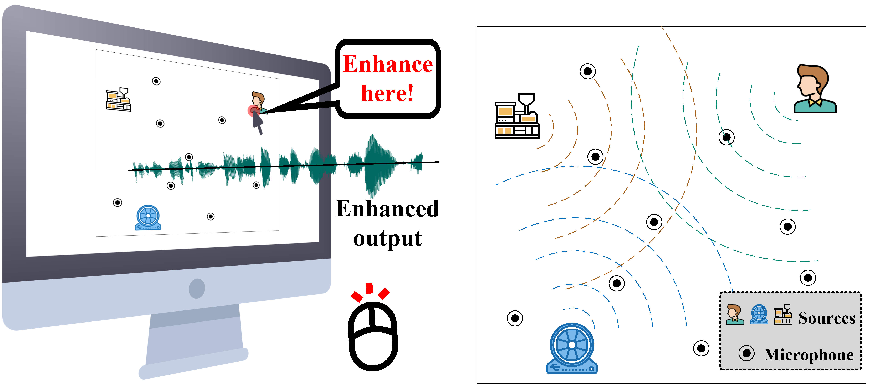

|
Weiguo Wang (王伟国) |
News
- [2022.06] The journal version of Symphony is accepted by IEEE TMC.
- [2022.01] Our paper MotorBeat is accepted by ACM Ubicomp 2022!
- [2020.11] Our work Symphony is presented in ACM SenSys 2020! (Teaser Video
 , Full Presentation Video)
, Full Presentation Video) - [2020.10] I serve as a T.A. of the mooc "Introduction to the Internet of Things".
- [2020.10] Our paper Symphony is accepted by ACM SenSys 2020!
- [2020.04] Our paper ChordMics is accepted by IEEE ICCCN 2020!
Biography
I am now a fourth-year Ph.D. student (expected to graduate in 2023.06) at the School of Software, Tsinghua University. I work in the Systems and Ubiquitous Networking (SUN) group in the Institute of Trustworthy Networks and Systems, advised by Prof. Yuan He. My research interests include wireless sensing and communication, mobile and ubiquitous computing.
Education
- 2018.09 - Now (2023.06 expected) Ph.D in Tsinghua University.
- 2014.09 - 2018.06 Bachelor in University of Electronic Science and Technology of China (UESTC).
Publications
Journals:
[7] Weiguo Wang, Jinming Li, Yuan He, Yunhao Liu, Localizing Multiple Acoustic Sources with a Single Microphone Array” IEEE Transactions on Mobile Computing (IEEE TMC), 2022, accepted. [Pre-Prin PDF]
Conferences:
[6] Weiguo Wang, Jinming Li, Yuan He, Xiuzhen Guo, Yunhao Liu, “MotorBeat: Acoustic Communication for Home Appliances via Variable Pulse Width Modulation” ACM on Interactive, Mobile, Wearable and Ubiquitous Technologies (ACM Ubicomp), 2022. [PDF]
[5] Weiguo Wang, Jinming Li, Yuan He, Yunhao Liu, “Symphony: Localizing Multiple Acoustic Sources with a Single Microphone Array” ACM Conference on Embedded Networked Sensor Systems (ACM SenSys), in Yokohama, Japan, 2020. [PDF]
[4] Weiguo Wang, Jinming Li, Meng Jin, Yuan He, “ChordMics: Acoustic Signal Purification with Distributed Microphones” IEEE International Conference on Computer Communications and Networks (IEEE ICCCN), in Honolulu, USA, 2020. [PDF]
[3] Weiguo Wang, Xiaolong Zheng, Yuan He, Xiuzhen Guo, “AdaComm: Tracing Channel Dynamics for Reliable Cross-Technology Communication” IEEE International Conference on Sensing, Communication and Networking (IEEE SECON), in Boston, USA, 2019. [PDF]
[2] Weiguo Wang, Xiuzhen Guo, Long Liu, Xiaoyue Lei, Xiaolong Zheng, Meng Jin, Yuan He, “Poster: Online Learning for Reliable Packet-level Cross-Technology Communication” ACM International Conference on Embedded Wireless Systems and Networks (ACM EWSN), in Beijing, China, 2019. [PDF]
[1] Haozhen Liu, Long Liu, Weiguo Wang, Qilong Zhao, Meng Jin, Ziqiang Zhou, Zhoubin Liu, “A Multi-Sensing Collaborative Diagnosis System for the Reliability of Industrial IoT” ACM International Conference on Embedded Wireless Systems and Networks (ACM EWSN), in Beijing, China, 2019. [PDF]
Projects
- MotorBeat: Acoustic Communication for Home Appliances via Variable Pulse Width Modulation 
- Symphony: Localizing Multiple Acoustic Sources with a Single Microphone Array 
- ChordMics: Acoustic Signal Purification with Distributed Microphones 
More and more home appliances are now connected to the Internet, thus enabling various smart home applications. However, a critical problem that may impede the further development of smart home is overlooked: Small appliances account for the majority of home appliances, but they receive little attention and most of them are cut off from the Internet. To fill this gap, we propose MotorBeat, an acoustic communication approach that connects small appliances to a smart speaker. Our key idea is to exploit direct current (DC) motors, which are common components of small appliances, to transmit acoustic messages. We design a novel scheme named Variable Pulse Width Modulation (V-PWM) to drive DC motors. MotorBeat achieves the following 3C goals: (1) Comfortable to hear, (2) Compatible with multiple motor modes, and (3) Concurrent transmission. We implement MotorBeat with commercial devices and evaluate its performance on three small appliances and ten DC motors. The results show that the communication range can be up to 10 m. This work is accepeted by ACM Ubicomp 2022.
In this work, we study the problem of concurrently localizing multiple acoustic sources with a smart device, e.g. a smart speaker like Amazon Alexa or Alibaba Tmall Genie. The existing approaches either can only localize a single acoustic source, or require deploying a distributed network of microphone arrays to function. Our proposal called Symphony is the first approach to tackle the above problem with a single microphone array. The insight behind Symphony is that the geometric layout of microphones on the array determines the unique relationship among signals from the same source along the same arriving path, while the source’s location determines the DoAs (direction-of-arrival) of signals along different arriving paths. Symphony therefore includes a geometry-based filtering module to distinguish signals from different acoustic sources, and a coherence-based module to identify signals from the same source. This work appears in the proceedings of ACM SenSys 2020, and IEEE TMC.
Acoustic signal acts as an essential input to many systems. However, pure acoustic signal is very difficult to extract, especially in noisy environments. Existing beamforming systems are able to extract the signal transmitted from certain directions. However, since microphones are centrally deployed, these systems have limited coverage and low spatial resolution. We overcome the above limitations and present ChordMics, a distributed beamforming system. By leveraging the spatial diversity of the distributed microphones, ChordMics is able to extract the acoustic signal from arbitrary points, even under multipath-rich and NLOS propagation scenarios. To realize such a system, we further address the fundamental challenge in distributed beamforming: aligning the signals captured by distributed and asynchronized microphones. We implement ChordMics and evaluate its performance under both LOS and NLOS scenarios. The evaluation results show that ChordMics can deliver higher SINR than the centralized microphone array. This work is accepeted by IEEE ICCCN 2020.
Awards
- 2021, The First Prize Scholarship, Tsinghua University | 清华大学一等奖学金
- 2019, The Second Prize Scholarship, Tsinghua University | 清华大学二等奖学金
- 2018, Outstanding Undergraduate, UESTC | 电子科技大学优秀本科毕业生
- 2017, The First Prize Scholarship, UESTC | 电子科技大学人民特等奖学金
- 2016, National Scholarship, Ministry of Education | 国家奖学金
- 2015, The First Prize of National College Students Mathematics Competition (SiChuan), Chinese Mathematical Society | 全国大学生数学竞赛一等奖（初赛）
- 2015, The First Prize Scholarship, UESTC | 电子科技大学人民特等奖学金
Updating time: 2022.06.11